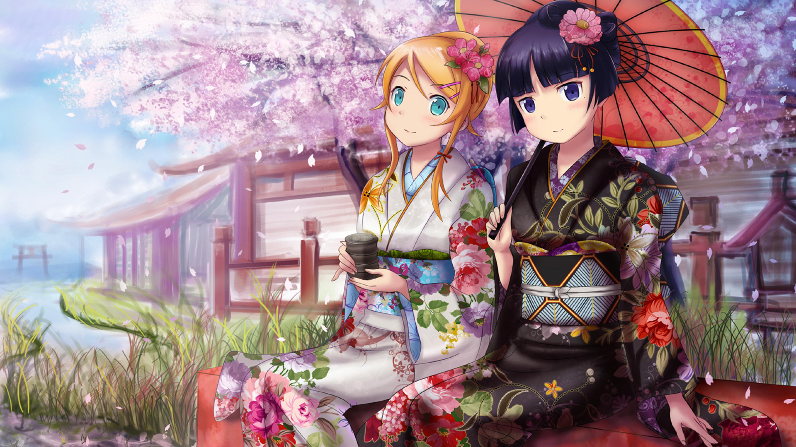
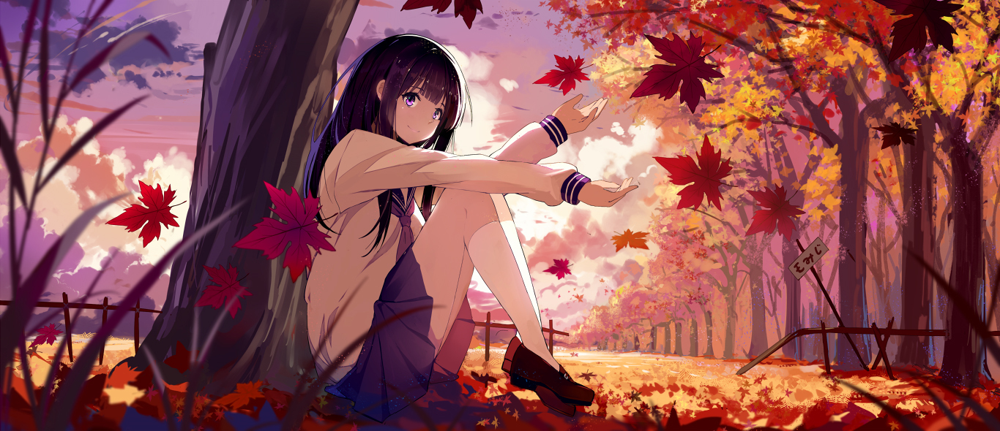

Season in the Anime



Pembagian Musim Pada Jadwal Tayang Anime
Hai Friends, kali ini saya akan membahas tentang Musim dalam rotasi rilis Anime, eitss Musim disini bukan berarti "Season 1 atau Season 2" melainkan rotasi munculnya Anime sesuai Musim yang ada di Jepang.
Di Jepang, pembagian Musim terbagi menjadi 4 yaitu :
- Musim Semi (Spring, Haru, 春 )
- Musim Panas (Summer, Natsu,夏)
- Musim Gugur (Autumn, Aki, 秋 )
- Musim Dingin (Winter, Fuyu, 冬).
Musim Semi (Spring, Haru, 春 )
Musim Semi berarti Kuartal pertama pada penayangan Anime. Spring menandakan musim yang berarti Bunga - bunga bermekaran. Rentang waktu pada Musim ini adalah Maret - Mei ( Pertengahan Juni ).
Pada Musim ini, Anime yang ditayangkan identik dengan Genre School dan Romance.
Fakta...
- Ada kebiasaan orang Jepang untuk melihat dan berpiknik dibawah bunga sakura yang dinamai Hanami. Kyoto adalah salah satu kota yang paling sering dikunjungi pada saat musim Semi dan sakura bermekaran. Selain itu kastil-kastil kuno atau oshiro serta otera (kuil budha) dan jinja (kuil Shinto) juga menjadi objek wisata karena udara yang hangat setelah musim dingin membuat orang senang berjalan jalan di udara terbuka.
- Puncak musim semi disebut setsubun no hi ( 20 Maret ).
- Di penghujung musim semi, sebelum memasuki musim panas, terjadi musim hujan atau tsuyu terlebih dahulu. Tsuyu berlangsung dari pertengahan Juni sampai Juli. Tsuyu bukanlah musim yang menyenangkan, karena hampir setiap hari hujan dan udara sangat lembab sehingga makanan mudah rusak.
Musim Panas ( Summer, Natsu, 夏 )
Musim Panas berarti Kuartal kedua pada Penayangan Anime. Summer menandakan udara yang panas dan identik dengan Kolam Renang dan Pantai. Rentang waktu pada Musim ini adalah Juni - Agustus.
Pada Musim ini, Anime yang ditayangkan cenderung memiliki grafik dan cerita yang lebih bagus daripada Musim lainnya.
Fakta...
- Puncak musim panas disebut Geshi (23 Juli).
- Liburan musim panas biasanya tanggal 20 Juli - 31 Agustus. Musim panas merupakan musim yang menyenangkan karena kita dapat bermain dan berenang di Pantai.Namun ada juga orang Jepang yang karena tinggal di daerah panas, berlibur ke daerah dingin seperti Hokkaido.
- Di Kota besar yang penuh bangungan beton dan gedung tinggi, suhu udara bisa mencapai 40 derajat Celcius.
- Perayaan musim panas diantaranya Obon (11 Agustus), dan Hanabi (Melihat kembang api).
Musim Gugur ( Autumn, Aki, 秋 )
Musim Gugur berarti Kuartal ketiga pada Penayangan Anime. Fall menandakan daun - daun yang berguguran dan udara yang mulai dingin. Rentang waktu pada Musim ini adalah September - November.
Pada Musim ini, Anime yang ditayangkan banyak sekali tentang Mecha, namun tidak menutup kemungkinan hadirnya Anime Slice Of Life di sela - sela akhir Musim.
Fakta...
- Musim gugur merupakan saat-saat daun memerah lalu berguguran. Musim ini juga merupakan masa panen aneka jenis tanaman pangan termasuk buah2xan. Jika ingin melihat Momiji dan menikmati alam sambil berolahraga jalan maka bisa datang ke Kyomizudera di Kyoto.
- Puncak musim gugur disebut Shubun no Hi (23 September)
- Perayaan di musim gugur diantaranya : Tsukimi (melihat bulan purnama) biasanya tanggal 25 September dan 23 Oktober. Jidai (Festival Jaman) yang merupakan festival terbesar di Kyoto pada 22 Oktober.
Musim Dingin ( Winter, Fuyu, 冬 )
Musim Dingin berarti Kuartal keempat pada Penayangan Anime. Winter menandakan udara yang sudah dingin dan di beberapa daerah salju mulai turun. Rentang waktu pada Musim ini adalah Desember - Februari.
Pada Musim ini, Anime - anime dengan genre beragam akan bermunculan, bahkan genre Action dan Supernatural juga sering bermunculan di Musim ini. Studio KyoAni sering menayangkan Anime produksinya pada Musim ini.
Fakta...
- Karena Jepang terletak memanjang dari Utara ke Selatan, maka perbedaan suhu cukup jelas antara Hokkaido di ujung utara dan Okinawa di ujung selatan. Sehingga tidak semua wilayah di Jepang tertutup salju.
- Puncak musim dingin disebut Doji (20 Januari).
- Perayaan musim dingin diantaranya : Oshogatsu (perayaan tahun baru), pada 1 Januari; Seijin no Hi (perayaan orang dewasa pada 10 Januari).
 |
Cosplay |
Cosplay adalah istilah dalam bahasa inggris yang dibuat oleh Jepang (wasei-eigo) yang asalnya dari gabungan dua kata, yaitu “costum” yang artinya kostum dan “play” yang artinya bermain, costum dan play disingkat menjadi cosplay. Cosplay sendiri berarti.... |
Read More.... |
 |
Vocaloids Songs |
Yoo Friends, beberapa waktu lalu udah saya kasih info seputar Vocaloids dan beberapa Karakternya, sekarang giliran lagunya nih!. Kali ini akan saya beri saran tentang lagu Vocaloids.... |
Read More.... |
 |
Anime Dengan Cerita yang Membingungkan |
Hai Friends, kali ini saya akan memberikan info tentang beberapa Anime yang memiliki cerita membingungkan tapi menarik saat kita selesai menontonnya. Nah apa sajakah Anime tadi, langsung saja kita cuss ke bawah, jangan malas membaca yah... |
Read More.... |